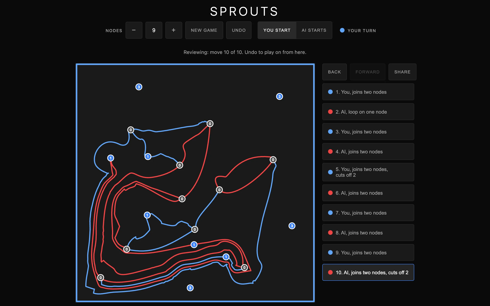
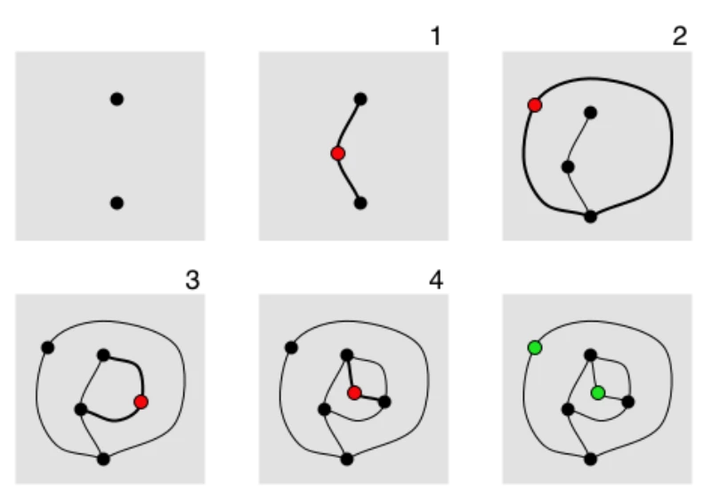

Sprouts is a pen-and-paper game that John Conway and Michael Paterson invented at Cambridge in 1967. You start with \(n\) dots, called spots. A move draws a curve from one spot to another, or from a spot back to itself, without crossing any existing line, and then puts a new spot somewhere on that curve. No spot may have more than three lines touching it. Whoever makes the last legal move wins. I wanted to play it against a computer.


How long a game lasts
Call the unused line slots on a spot its lives. There are \(3n\) at the start. Every move spends two lives, one at each end of the curve (or two on the same spot for a loop), and creates a spot that already has two lines, so one life. Each move costs exactly one life net, and the last move still leaves that new spot's life unspent, so a game lasts at most \(3n - 1\) moves.
When the game ends, every surviving spot has exactly one life, because a spot with two could still draw a loop to itself. Each survivor's two neighbors are dead, and no dead spot neighbors two survivors, since two lines into the same dead spot share a face and the survivors at their far ends could be joined. So there are at least twice as many dead spots as survivors. After \(m\) moves there are \(n + m\) spots and \(S = 3n - m\) survivors, and \(n + m \geq 3S\) gives \(m \geq 2n\). Winning Ways (Berlekamp, Conway, and Guy) calls a dead spot that neighbors no survivor a Pharisee, and counting them makes it exact: \(m = 2n + P/4\). So a game runs between \(2n\) and \(3n - 1\) moves. With 6 spots that's 12 to 17.
Who wins is a different question. Applegate, Jacobson, and Sleator computed it by exhaustive search up to 11 spots in 1991 and conjectured that the first player wins exactly when \(n \bmod 6\) is 3, 4, or 5. Lemoine and Viennot carried the pattern to 44 spots by computing nimbers, one value for each independent part of the board instead of one search over the whole thing. Nobody has proved it in general. The AI here does the same thing on smaller boards.
The position without the drawing
The first version of this treated the board as a picture. It rasterized the lines, thinned the free space to a skeleton, and pathfound along that, and legality was a pixel test. It was slow and wrong in both directions, and the search ran on a graph that guessed at which spots could still reach each other. At one point it declared a game over with a legal move still on the board.
The rewrite keeps the drawing out of the rules. A position is a rotation system: each spot lists its lines in counterclockwise order, and that alone determines the faces, which is everything Sprouts cares about. Two spots can be joined when both have a life left and they share a face. A line that joins two spots on the same boundary splits its face, and which side the other pieces of that boundary land on is part of the move. A line I draw gets read into this model: the direction it leaves each spot, against that spot's existing lines, says which corner it uses, and a point-in-polygon test on the closed curve it completes says which pieces it cuts off. The move list, legality, and game over all come from the model. The geometry only has to check that the curve doesn't cross anything.
Playing the sum
Sprouts is an impartial game, so every position has a nimber, and a position made of independent parts has the XOR of its parts' nimbers. The player to move loses exactly when that sum is zero. A move changes one face, but a spot with two lines has a corner in each face beside it, so faces that share a live spot are one game. The faces linked that way are the regions, and each is solved on its own.
A spot with three lines never ends a move again, so the game in a region depends only on the live corners around each boundary, which corners share a spot, and which boundaries share a face. A four-spot game has about 650,000 positions as rotation systems and 1,891 once dead spots are forgotten and mirror images are identified. Nimbers are stored by that form and kept for as long as the page is open, so the next game starts with most of its endgames already solved.
When every region is small enough to solve within a budget, about a quarter of a second, the AI plays a move that leaves a zero sum, or when there isn't one, the move that leaves the opponent the most room. Six fresh spots have 18 lives between them and are already too much to solve from cold, so bigger positions go to an alpha-beta search with iterative deepening under an 800 ms clock. The search keys its transposition table on the same live form, and when it reaches a position whose regions are all solved it scores that exactly instead of guessing. The guess, where it has to, is the parity of the lives left plus a count of the pairs that can still be joined. The clock is the whole turn's thinking whatever the spot count, so a 24-spot game plays at the same pace as a 4-spot one, with a much shallower search.
Drawing the move
The search picks a move in the model, and then it has to be drawn. Lines keep a clearance from other lines and from spots so the board stays readable and later moves have somewhere to go. The router erodes the face by those clearances, pushing every wall inward and cutting a disc around every spot except the move's two ends, and triangulates what's left with a constrained Delaunay triangulation. Any path through the free triangles keeps the clearances by construction, and if the two ends are in different pieces of the eroded face, there is no room.
The path also has to be the right move. A face with pieces inside it has a different move for each side the curve passes them on, so the search over the triangles tracks which pieces it has passed on which side and looks for the class the model named. A funnel pulls the corridor taut, a relaxation step moves it off the walls where there's room, and a cubic spline is fit to the result. The curve is then read back through the same embedding my hand-drawn lines go through, and if it reads as a different move it's refused. When a move can't be drawn at all the AI tries the next one in its ranking. Everything in this pipeline is sums, products, and square roots, no trig and no hypot, because the WebAssembly build has to draw the same curve bit for bit as the native one or a shared game comes out different on the other end.
After every move the board settles. Each pair of things that could be too close has a ratio, its distance over the clearance it wants, and the settle repeatedly pushes apart the pairs near the tightest one while holding the topology fixed: every line still has to read back as the move it was, and nothing new may cross. The new spot rides along its curve. Crowded corners spread out, and a long game on a big board stays drawable where the old version ran out of room.
Playing it
Games run from 2 to 24 spots on a sunflower spiral. You can undo and step through the game, and the move list says what each line did and how many spots it cut off. A share link stores each move as its index in the move list, a byte or two a move. The other side's engine reroutes and resettles the same moves, so it draws its own lines, and the link carries the curves instead when a move won't regenerate the same way. On a phone a magnifier sits beside your finger while you draw, and you can pinch to zoom mid-stroke. It plays from the keyboard too. The engine is Rust compiled to WebAssembly, running in a Web Worker.